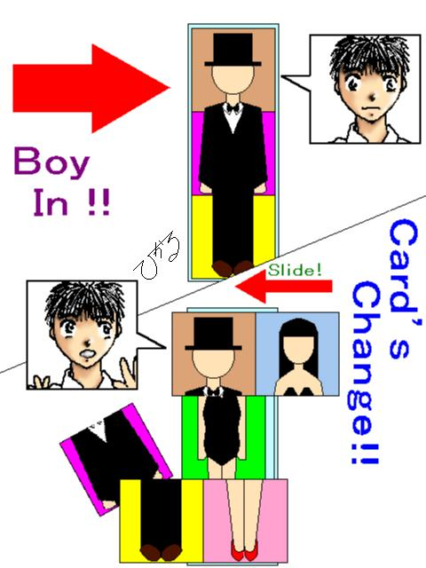
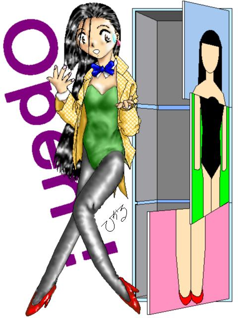

ＭａｇｉｃＢｏｘ！
やはり、手品のアシスタントは、水着より、レオタードｏｒスパンコールでしょう。
（スリット入りドレスも可。）
という信念の元、スペルザらスさんに触発され、ちょっくら、描いてみました。
しかし、やはりというべきか、手品そのものが、ビジュアル的な表現抜きでは描写が難しい素材なため、ＴｅｘｔＯｎｌｙでは、限界がある。
関連作品が、少ないのも、無理はない。
やはり、イラストの補助がなければ、こちらの伝えないことを表すのは、大変だろう。
（え、おいらに、その実力がないだけ？）
というわけで、あえてＣＧだけの作品として、あげてみました。
内容的に、けっこう、八重洲二世さんの、「奇術」の影響受けてます。


すんませんねえ。
「シャイニング〜」の第４話もあるし、「恋人同士も楽じゃない（仮）」も書いてないし、自分のシマでも、まだ連載抱えてるのに、こんな寄り道脇道ばかりしちゃって。
けど、１つの作品に取りかかりすぎると煮詰まっちゃいますからねえ。
正直、１月末に、あれの第２話をＵＰした時点で、かなり燃え尽きちゃってましたから。